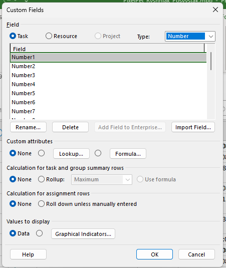
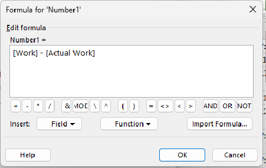

01
Ava Custom Fields
Mine vahekaardile Project → Custom Fields. Avaneb dialoogaken, kus saad hallata kohandatud välju.

Kohandatud arvutusvälju kasutades saad kuvada automaatselt arvutatud väärtusi, mis põhinevad muudel projektiandmetel.
Mine vahekaardile Project → Custom Fields. Avaneb dialoogaken, kus saad hallata kohandatud välju.

Vali Task ja sobiv väljatüüp (nt Number või Text). Klõpsa Rename ja anna väljale nimi, nt Kulutõhusus. Kinnita OK-ga.

Klõpsa Formula. Sisesta arvutusvalem, nt [Cost] / [Work], mis jagab kulud töömahuga. Kasuta nuppu Field ja Function, et lisada välju ja funktsioone ilma käsitsi kirjutamata.

Arvutusvälju kasutatakse näiteks ülesannete eelarve ületamise automaatseks tuvastamiseks, tootlikkuse arvutamiseks või kohandatud olekumärgistuse kuvamiseks graafiliste näidikutega (Graphical Indicators).